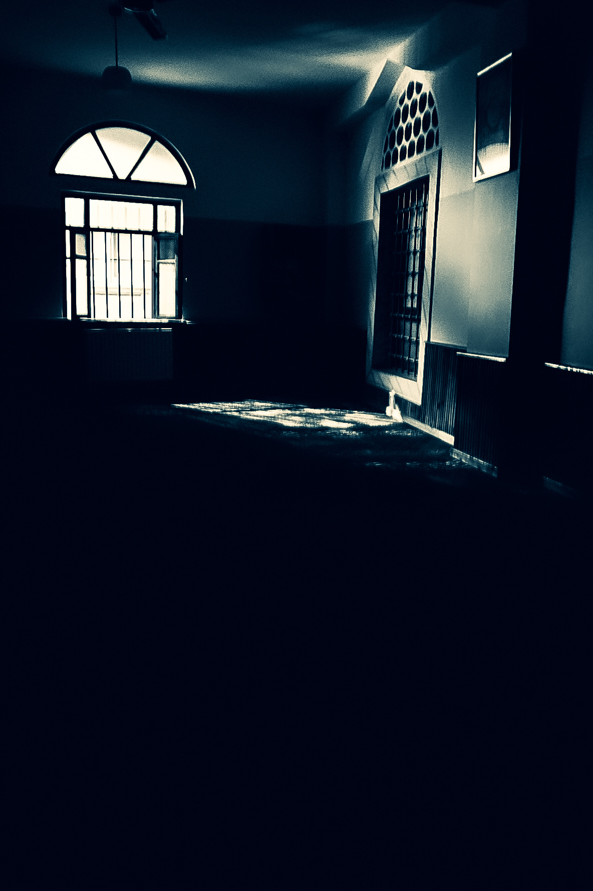

Fotoğraf ve Hayat

Bir fotoğraf çektiğimizde aslında zamanı durdurmaya çalışırız. Oysa hayat akmaktan başka bir şey yapmaz. İşte fotoğrafın büyüsü de bu çelişkide saklıdır: Akıp giden bir şeyin içinden, tek bir saniyeyi alıp bize geri verir.
Fotoğraf, bakmayı öğrenmektir. Sabah işe giderken önünden yüz kez geçtiğimiz bir duvara ışık belli bir açıyla düştüğünde birdenbire fark edilir hale gelir. Elinde kamera olan insan, dünyaya daha yavaş ve daha dikkatli bakar. Bu yüzden fotoğraf yalnızca bir kayıt aracı değil, bir farkındalık egzersizidir. Çoğu zaman fotoğrafı çekmeden önce görmüş oluruz; asıl değişen, görme biçimimizdir.
Fotoğraf aynı zamanda hafızamızın bekçisidir. Annenin eski bir karedeki gülümsemesi, çocukluk sokağının soluk renkleri, bir arkadaşla paylaşılan son yaz... Bunlar zihnimizde zamanla silikleşir, ama bir fotoğraf onları bir kapı gibi aralar. Bir fotoğrafa baktığımızda yalnızca görüntüyü değil, o günün kokusunu, sesini ve hissini de hatırlarız.
Yine de bir uyarı gerekir: Her anı çekmeye çalışırken onu yaşamayı unutabiliriz. Konserde ekrana bakarak geçen dakikalar, yemeğin tadından önce kadrajın düşünülmesi, hayatı yaşamak yerine belgelemeye dönüşebilir. En iyi fotoğraflar, yaşamın içinden kısa bir süreliğine başını kaldıran ve sonra tekrar o yaşama dönen insanların çektikleridir.
Sonuçta fotoğraf ve hayat birbirinin aynasıdır. Hayat fotoğrafa malzeme verir, fotoğraf da hayata dikkat kazandırır. Biri olmadan diğeri eksik kalır.
Belki de iyi bir fotoğrafın sırrı, çok güzel bir an yakalamaktan çok, o ana gerçekten orada olmaktır.